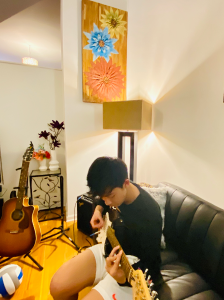

I started playing basketball when I was four at my local YMCA. From then on my passion for basketball sparked. I watched NBA games, played basketball video games, and followed my favorite players. From 6th to 8th grade and in high school, I played for my school's basketball team. A few years ago, I started to play basketball every Saturday morning with my dad. This experience helped me build a strong bond with him and brought us closer as not only father and son, but also as friends. Through my experience in playing basketball, my teamwork skills started to build up and I learned perseverance and determination.
Michael Jordan is my favorite NBA player and someone who I look up to because of his competitive nature and determination.
When I was little I first started to learn piano and the drums. I never thought I would have such passion and talent for guitar until I saw my dad playing and singing. I was curious and wanted to try this new instrument. I picked the guitar up very fast and my parents signed me up for lessons. However, as I moved up in level, I realized my talent in guitar. The lessons started to get boring because I would learn a song way faster than the rest of my peers and I would not have anything else to do for the rest of class. From then on, I self-taught myself different fingerstyle pieces I enjoyed through YouTube. My experience in learning and teaching myself different pieces helped improve my patience and perseverance. I realized that self-motivation and interest is the best teacher.
Photography has always been fascinating to me. My interest first sparked when I saw the photographs my grandfather took. From that point on, whenever my parents and I would go out to travel, I would take pictures using my dad's professional camera. Wanting to capture a beautiful scene was always my goal. However, I don't take a lot of photos. I only take photos that I find really astonishing. Photography cultivates the creative and aesthetic side of me. My experience in photography taught me that not everyone is going to like the photos you took even if you found them amazing. Different people have different perspectives on certain things. I learned to accept and appreciate other people's work. Photography also helped me to become more patient, open-minded, and unique.
Hiking is one outdoor activity that I really enjoy. My parents and I flew to Banff in Alberta, Canada a few years ago and the hiking experience there felt bewildering. We also would drive to forest reserves back in Illinois on weekends when it was still warm out. While hiking I realized the problematic things my body is capable of. Hiking strengthens not only my body but also my mind. Hiking on long and tiring trails really challenges my determination, and every time I came through. Sometimes I am so focused that I forget to look around and enjoy the view. Hiking taught me to enjoy the small things in life. The trail also taught me patience, perseverance, and gratitude.